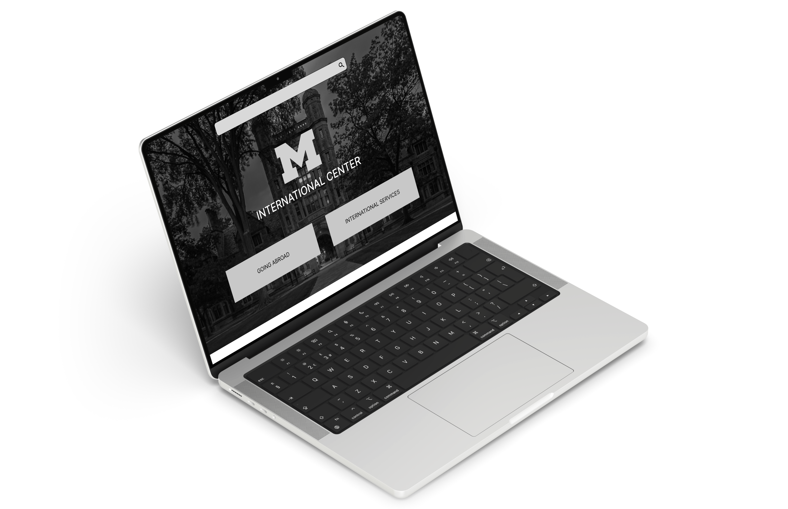
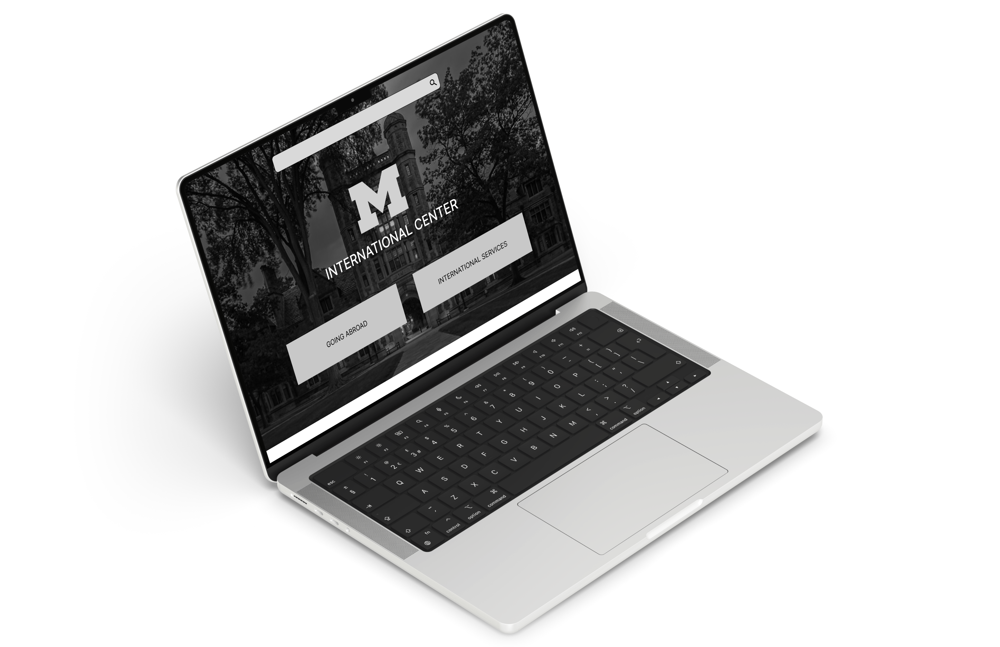

UX Research Consultant Work
Michigan Open UX
 

Duration
August 2023 – December 2023
Project Type
Webside Redesign and Information Architecture Assessment
Role
UX Researcher
Methods
User Interviews, Information Architecture Mapping, Wireframing
Identify the Problem
The Univeristy of Michigan International Center website is a crucial information hub for international students, visiting scholars, faculty, staff, and also UX students planning to study aborad.
However, with a website designed in 2014 that had been launched since 2016, they were looking to redesign the website with improved Information architecture (IA). The website holds 400+ general information pages and another 2000+ time-specific pages, making this crucial for user efficiency in finding information.
Additionally, they were looking for a more appealing User Interface (UI) and better User Experience (UX) since web design trends today are different from those a decade ago.
Our Research Question: How can we utilize navigation and information architecture to help users become more efficient in finding what they need?
Competitive Analysis
Information Architecture Mapping

Mapping Proposed New Information Architecture